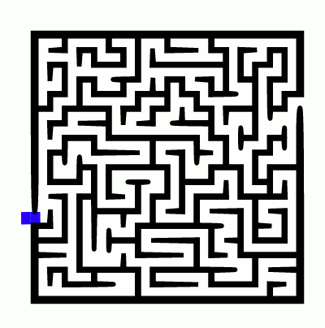
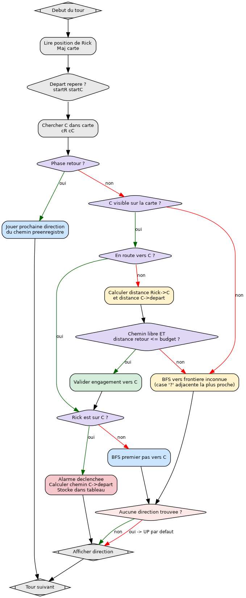

Rapport - The Labyrinth
Table des matières
Lien vers l’exercice sur CodingGame

1. Introduction
The Labyrinth est un problème de difficulté Medium disponible sur coding game
Rick est téléporté dans une structure rectangulaire qu’il doit explorer. La mission se
décompose en deux phases. D’abord trouver la salle de commande C pour
désactiver le champs de force, puis revenir à sa postion de départ T avant
que l’alarme ne s’active.
La vraie difficulté vient du fait que la carte est découverte progressivement.
À chaque tour, Rick ne voit que les cases dans un carré de 5×5 centré sur lui,
le reste est ? (inconnu). On ne peut donc pas calculer le chemin optimal en
une seule fois dès le départ, il faut explorer intelligemment, puis se déplacer
une fois la carte suffisamment révélée.
2. Analyse du problème
Le programme reçoit en initialisation trois entiers R C A (lignes, colonnes,
compte-à-rebours de l’alarme). Puis à chaque tour : la position KR KC de
Rick, suivie de R lignes ASCII représentant l’état visible de la grille. On
répond par une des quatre chaînes UP, DOWN, LEFT, RIGHT.
| Symbole | Signification |
|---|---|
# |
Mur infranchissable |
. |
Couloir libre |
T |
Position de départ de Rick |
C |
Salle de commande (objectif) |
? |
Zone non encore scannée (inconnue) |
La contrainte critique : une fois Rick posé sur C, l’alarme se déclenche et
il n’a plus que A tours pour rentrer. Il faut donc vérifier avant de
s’engager que bfs_distance(C, T) < A=. De même, voir C sur la carte ne
suffit pas : le chemin peut encore traverser des zones ? infranchissables.
On attend un chemin entièrement libre (sans ? ni #) avant de foncer.
3. Méthode de résolution
Tout repose sur le parcours en largeur (BFS). Le parcours en profondeur (DFS) ne convient pas : on veut les chemins les plus courts, pas juste n’importe quel chemin.
La logique principale est une machine à trois états :
- Exploration : la salle de commande n’est pas encore visible, ou le chemin vers elle traverse encore des zones inconnues. On se dirige vers la frontière inconnue la plus proche.
- Aller : la salle de commande est accessible et la distance de retour rentre dans le budget de tours. On fonce.
- Retour : Rick vient de poser le pied sur la commande. On joue le chemin préenregistré pas à pas jusqu’au départ.
La carte est stockée en mémoire globale et mise à jour à chaque tour. Un caractère connu n’est jamais écrasé par une zone inconnue, donc la carte ne fait que progresser.
Le code a quatre BFS distincts :
- Calcul de distance : compte les cases entre deux points sans construire de chemin. Utilisé uniquement pour vérifier que le retour rentre dans le budget.
- Premier pas vers une cible : retourne la direction à prendre pour rejoindre un caractère précis. Tolère les zones inconnues comme filet de sécurité une fois qu’on s’est engagé vers la commande.
- Exploration de frontière : cherche non pas une case précise mais la première limite avec l’inconnu. Se propage uniquement sur du terrain certifié, puis détecte les cases inconnues adjacentes sans les traverser.
- Construction du chemin de retour : construit le chemin complet vers le départ et le stocke dans un tableau. Le BFS remonte naturellement à l’envers, donc on inverse le tableau à la fin.

4. Code commenté
#include <stdlib.h> #include <stdio.h> #include <string.h> #include <stdbool.h> /** @defgroup config Constantes de configuration * @{ */ #define MAXR 100 /**< Nombre maximum de lignes de la grille */ #define MAXC 200 /**< Nombre maximum de colonnes de la grille */ #define MAXPATH 20000 /**< Taille maximale du chemin de retour stocké */ /** @} */ /** @defgroup globals Variables globales * @{ */ int R; /**< Nombre réel de lignes (lu en entrée) */ int C; /**< Nombre réel de colonnes (lu en entrée) */ int A; /**< Budget de tours pour revenir après avoir atteint C */ char grille[MAXR][MAXC]; /**< Carte persistante du labyrinthe, '?' = inconnu */ /** Deltas de déplacement pour les 4 directions : haut, bas, gauche, droite */ int deltaLigne[4] = {-1, 1, 0, 0}; int deltaCol[4] = { 0, 0, -1, 1}; /** Noms des directions, indexés comme deltaLigne/deltaCol */ char *nomDir[4] = {"UP", "DOWN", "LEFT", "RIGHT"}; /** @} */ /** * @brief Nœud représentant une case de la grille. */ typedef struct { int r; /**< Ligne */ int c; /**< Colonne */ } Node; /** * @brief Vérifie qu'une case est dans les limites de la grille. * @param r Ligne à tester. * @param c Colonne à tester. * @return true si (r, c) est dans [0, R[ x [0, C[, false sinon. */ bool inBounds(int r, int c) { return r >= 0 && r < R && c >= 0 && c < C; } /** * @brief Calcule la distance BFS entre deux cases en évitant '#' et '?'. * * Utilisée exclusivement pour vérifier que @c distBack <= A avant de * s'engager vers la salle de commande. * * @param ligneDepart Ligne source. * @param colDepart Colonne source. * @param ligneCible Ligne cible. * @param colCible Colonne cible. * @return Distance en nombre de cases, ou -1 si aucun chemin n'existe. */ int bfs_distance(int ligneDepart, int colDepart, int ligneCible, int colCible) { int dejaVu[MAXR][MAXC] = {0}; int distTab[MAXR][MAXC]; Node file[MAXR * MAXC]; int debut = 0, fin = 0; file[fin++] = (Node){ligneDepart, colDepart}; dejaVu[ligneDepart][colDepart] = 1; distTab[ligneDepart][colDepart] = 0; while (debut < fin) { Node courant = file[debut++]; if (courant.r == ligneCible && courant.c == colCible) return distTab[courant.r][courant.c]; for (int i = 0; i < 4; i++) { int nouvLigne = courant.r + deltaLigne[i]; int nouvCol = courant.c + deltaCol[i]; if (inBounds(nouvLigne, nouvCol) && !dejaVu[nouvLigne][nouvCol] && grille[nouvLigne][nouvCol] != '#' && grille[nouvLigne][nouvCol] != '?') { dejaVu[nouvLigne][nouvCol] = 1; distTab[nouvLigne][nouvCol] = distTab[courant.r][courant.c] + 1; file[fin++] = (Node){nouvLigne, nouvCol}; } } } return -1; } /** * @brief Renvoie la direction du premier pas BFS vers une case cible. * * Parcourt la carte en autorisant les cases '?' (filet de sécurité * une fois @c goingToC validé). Remonte le tableau @c parent[] pour * identifier le voisin direct de la source, puis déduit la direction. * * @param ligneDepart Ligne source (position actuelle de Rick). * @param colDepart Colonne source. * @param cible Caractère cible à atteindre (ex. @c 'C'). * @return Chaîne de direction ("UP", "DOWN", "LEFT", "RIGHT"), * ou NULL si la cible est inaccessible. */ char* bfs_move(int ligneDepart, int colDepart, char cible) { int dejaVu[MAXR][MAXC] = {0}; Node parentTab[MAXR][MAXC]; Node file[MAXR * MAXC]; int debut = 0, fin = 0; file[fin++] = (Node){ligneDepart, colDepart}; dejaVu[ligneDepart][colDepart] = 1; while (debut < fin) { Node courant = file[debut++]; if (grille[courant.r][courant.c] == cible) { /* on remonte le chemin pour trouver le premier pas depuis la source */ Node retour = courant; while (!(parentTab[retour.r][retour.c].r == ligneDepart && parentTab[retour.r][retour.c].c == colDepart)) { retour = parentTab[retour.r][retour.c]; } for (int i = 0; i < 4; i++) { if (ligneDepart + deltaLigne[i] == retour.r && colDepart + deltaCol[i] == retour.c) return nomDir[i]; } } for (int i = 0; i < 4; i++) { int nouvLigne = courant.r + deltaLigne[i]; int nouvCol = courant.c + deltaCol[i]; /* on autorise les '?' ici puisqu'on sait déjà où est la cible */ if (inBounds(nouvLigne, nouvCol) && !dejaVu[nouvLigne][nouvCol] && grille[nouvLigne][nouvCol] != '#') { dejaVu[nouvLigne][nouvCol] = 1; parentTab[nouvLigne][nouvCol] = courant; file[fin++] = (Node){nouvLigne, nouvCol}; } } } return NULL; } /** * @brief Renvoie la direction vers la zone inconnue ('?') la plus proche. * * Effectue un BFS sur le terrain connu uniquement (sans '#' ni '?'). * Pour chaque case visitée, inspecte ses voisins immédiats : dès qu'un * voisin est '?', on se dirige vers lui (sans le traverser). * * @param ligneDepart Ligne source. * @param colDepart Colonne source. * @return Chaîne de direction vers la frontière inconnue, * ou NULL si aucune zone '?' n'est atteignable. */ char* bfs_explore(int ligneDepart, int colDepart) { int dejaVu[MAXR][MAXC] = {0}; Node parentTab[MAXR][MAXC]; Node file[MAXR * MAXC]; int debut = 0, fin = 0; file[fin++] = (Node){ligneDepart, colDepart}; dejaVu[ligneDepart][colDepart] = 1; while (debut < fin) { Node courant = file[debut++]; /* on regarde si y'a une case inconnue à côté */ for (int i = 0; i < 4; i++) { int nouvLigne = courant.r + deltaLigne[i]; int nouvCol = courant.c + deltaCol[i]; if (inBounds(nouvLigne, nouvCol) && grille[nouvLigne][nouvCol] == '?') { Node retour = courant; while (!(parentTab[retour.r][retour.c].r == ligneDepart && parentTab[retour.r][retour.c].c == colDepart)) { retour = parentTab[retour.r][retour.c]; } for (int i = 0; i < 4; i++) { if (ligneDepart + deltaLigne[i] == retour.r && colDepart + deltaCol[i] == retour.c) return nomDir[i]; } } } /* on avance seulement sur les cases connues et pas des murs */ for (int i = 0; i < 4; i++) { int nouvLigne = courant.r + deltaLigne[i]; int nouvCol = courant.c + deltaCol[i]; if (inBounds(nouvLigne, nouvCol) && !dejaVu[nouvLigne][nouvCol] && grille[nouvLigne][nouvCol] != '#' && grille[nouvLigne][nouvCol] != '?') { dejaVu[nouvLigne][nouvCol] = 1; parentTab[nouvLigne][nouvCol] = courant; file[fin++] = (Node){nouvLigne, nouvCol}; } } } return NULL; } /** @defgroup retour Chemin de retour préenregistré * Précalculé une seule fois quand Rick arrive sur C, rejoué pas à pas. * @{ */ int cheminRetour[MAXPATH]; /**< Indices de direction (0=UP 1=DOWN 2=LEFT 3=RIGHT) */ int longueurChemin = 0; /**< Nombre total de pas */ int indexChemin = 0; /**< Indice du prochain pas à jouer */ /** @} */ /** * @brief Construit le chemin BFS optimal de (sr,sc) à (tr,tc) dans path[]. * * Reconstruit le chemin à rebours via le tableau @c parent[], puis * l'inverse pour l'obtenir dans le bon sens (source -> cible). * Les cases '#' et '?' sont exclues du parcours. * * @param ligneDepart Ligne source (position sur C au moment de l'appel). * @param colDepart Colonne source. * @param ligneCible Ligne cible (startR, position de départ T). * @param colCible Colonne cible (startC). */ void bfs_build_path(int ligneDepart, int colDepart, int ligneCible, int colCible) { int dejaVu[MAXR][MAXC] = {0}; Node parentTab[MAXR][MAXC]; Node file[MAXR * MAXC]; int debut = 0, fin = 0; file[fin++] = (Node){ligneDepart, colDepart}; dejaVu[ligneDepart][colDepart] = 1; while (debut < fin) { Node courant = file[debut++]; if (courant.r == ligneCible && courant.c == colCible) { /* on reconstruit le chemin en partant de la fin */ Node temp = courant; longueurChemin = 0; while (!(temp.r == ligneDepart && temp.c == colDepart)) { Node p = parentTab[temp.r][temp.c]; for (int i = 0; i < 4; i++) { if (p.r + deltaLigne[i] == temp.r && p.c + deltaCol[i] == temp.c) cheminRetour[longueurChemin++] = i; } temp = p; } /* le chemin est à l'envers donc on le retourne */ for (int i = 0; i < longueurChemin / 2; i++) { int tmp = cheminRetour[i]; cheminRetour[i] = cheminRetour[longueurChemin - i - 1]; cheminRetour[longueurChemin - i - 1] = tmp; } indexChemin = 0; return; } for (int i = 0; i < 4; i++) { int nouvLigne = courant.r + deltaLigne[i]; int nouvCol = courant.c + deltaCol[i]; if (inBounds(nouvLigne, nouvCol) && !dejaVu[nouvLigne][nouvCol] && grille[nouvLigne][nouvCol] != '#' && grille[nouvLigne][nouvCol] != '?') { dejaVu[nouvLigne][nouvCol] = 1; parentTab[nouvLigne][nouvCol] = courant; file[fin++] = (Node){nouvLigne, nouvCol}; } } } } /** * @brief Point d'entrée boucle principale du jeu. * * Lit les dimensions et le budget d'alarme, initialise la carte à '?', * puis tourne en boucle infinie. À chaque tour, met à jour la carte, * évalue l'état courant (exploration / aller / retour) et émet une * direction sur stdout. * * @return 0 (jamais atteint en pratique). */ int main() { scanf("%d%d%d", &R, &C, &A); /* au début on ne connaît rien */ for (int i = 0; i < R; i++) for (int j = 0; j < C; j++) grille[i][j] = '?'; int ligneStart = -1, colStart = -1; /**< Position de départ, mémorisée dès que 'T' est vu */ bool goingToC = false; /**< true quand on s'engage vers C */ bool onRentre = false; /**< true quand l'alarme est déclenchée et qu'on rentre */ while (1) { int ligneRick, colRick; scanf("%d%d", &ligneRick, &colRick); /* on met à jour la grille avec ce que Rick voit ce tour-ci */ for (int i = 0; i < R; i++) { char rangee[C + 1]; scanf("%s", rangee); for (int j = 0; j < C; j++) { if (rangee[j] != '?') grille[i][j] = rangee[j]; if (grille[i][j] == 'T') { ligneStart = i; colStart = j; } } } /* on cherche où est C sur la grille */ int ligneC = -1, colC = -1; for (int i = 0; i < R; i++) for (int j = 0; j < C; j++) if (grille[i][j] == 'C') { ligneC = i; colC = j; } /* si on est en mode retour on joue juste le chemin déjà calculé */ if (onRentre) { printf("%s\n", nomDir[cheminRetour[indexChemin++]]); continue; } char* mouvement = NULL; if (ligneC != -1) { /* C est visible, on vérifie si on a le temps de rentrer après */ if (!goingToC) { int distVersC = bfs_distance(ligneRick, colRick, ligneC, colC); int distRetour = bfs_distance(ligneC, colC, ligneStart, colStart); if (distVersC != -1 && distRetour != -1 && distRetour <= A) goingToC = true; } if (goingToC) { if (ligneRick == ligneC && colRick == colC) { /* Rick est sur C, l'alarme se déclenche, on calcule le chemin retour */ onRentre = true; bfs_build_path(ligneRick, colRick, ligneStart, colStart); printf("%s\n", nomDir[cheminRetour[indexChemin++]]); continue; } else { mouvement = bfs_move(ligneRick, colRick, 'C'); } } else { /* pas encore sûr de pouvoir rentrer, on continue d'explorer */ mouvement = bfs_explore(ligneRick, colRick); } } else { /* C pas encore trouvé, on explore */ mouvement = bfs_explore(ligneRick, colRick); } if (mouvement == NULL) mouvement = "UP"; /* au cas où y'a plus rien à explorer */ printf("%s\n", mouvement); } return 0; }
5. Résultats et tests, débogage avec GDB
On recompile avec -g pour inclure les infos de débogage, puis on lance GDB en lui donnant le fichier de teste (qui est le teste numéro 1 de coding game) en entrée :
gcc -g -Wall -Wextra -o labyrinthe labyrinthe.c gdb ./labyrinthe
On pose un point d’arrêt sur bfs_build_path, la fonction la plus importante à vérifier : c’est elle qui construit le chemin de retour au moment où Rick pose le pied sur C. On lance avec run < test1.txt et on attend que GDB s’arrête :
(gdb) break bfs_build_path
Breakpoint 1 at 0x2003: file labyrinthe.c, line 271.
(gdb) run < teste_gdb.txt
RIGHT
RIGHT
RIGHT
RIGHT
RIGHT
RIGHT
RIGHT
Breakpoint 1, bfs_build_path (ligneDepart=6, colDepart=12, ligneCible=6, colCible=5)
at labyrinthe.c:271
(gdb) finish
(gdb) print longueurChemin
$1 = 7
(gdb) print cheminRetour[0]
$2 = 2
(gdb) print cheminRetour[6]
$3 = 2
6. Solution alternative
Lien vers la solution sur CodingGame
#include <stdlib.h> #include <stdio.h> #include <string.h> int main() { int R; // number of rows. int C; // number of columns. int A; // number of rounds between the time the alarm countdown is // activated and the time the alarm goes off. scanf("%d%d%d", &R, &C, &A); fprintf(stderr, "R = %i, C = %i\n", R, C); char target = '?'; while (1) { int KR; // row where Kirk is located. int KC; // column where Kirk is located. scanf("%d%d\n", &KR, &KC); fprintf(stderr, "Kirk : R:%i C:%i\n", KR, KC); char map[R][C+1]; memset(map, 0, sizeof(char)*R*(C)); for (int i = 0; i < R; i++) { fgets(map[i], 10000, stdin); map[i][C] = '\0'; } if (map[KR][KC] == 'C') target = 'T'; for (int i = 0; i < R; i++) { for (int j = 0; j < C; j++) { if (map[i][j] == 'C' && target == 'T') map[i][j] = '.'; if (map[i][j] == 'T' && target == 'C') map[i][j] = '.'; } } map[KR][KC] = '@'; for (int i = 0; i < R; i++) { fprintf(stderr, "%s\n", map[i]); } map[KR][KC] = '.'; int queue[R*C]; int qprev[R*C]; int qbegin = 0; int qend = 0; int cur = -1; int cx, cy; #define pop(z) { (z) = queue[qbegin++]; } #define push(z) { if (!vst[z]) { qprev[z] = cur; vst[z] = 1; \ queue[qend++] = (z); } } char vst[R*C]; memset(vst, 0, R*C); memset(queue, 0, R*C*sizeof(int)); memset(qprev, -1, R*C*sizeof(int)); push(KR*C+KC); int tgt = -1; while (qbegin < qend) { pop(cur); cx = cur % C; cy = cur / C; if (map[cy][cx] == target) { fprintf(stderr, "found target : %i %i : %c\n", cy, cx, map[cy][cx]); tgt = cur; break; } if (map[cy ][cx+1] != '#') push(cy*C + cx + 1); if (map[cy ][cx-1] != '#') push(cy*C + cx - 1); if (map[cy+1][cx ] != '#') push((cy+1)*C + cx); if (map[cy-1][cx ] != '#') push((cy-1)*C + cx); } if (tgt < 0) { fprintf(stderr, "Nothing to explore\n"); target = 'C'; } else cur = tgt; while (qprev[qprev[cur]] >= 0) cur = qprev[cur]; cy = cur / C; cx = cur % C; fprintf(stderr, "c : %i %i : %c\n", cy, cx, map[cy][cx]); if (cy == KR) { if (cx < KC) fprintf(stdout, "LEFT\n"); else fprintf(stdout, "RIGHT\n"); } else if (cy > KR) { fprintf(stdout, "DOWN\n"); } else fprintf(stdout, "UP\n"); } return 0; }
La solution est beaucoup plus compacte (~80 lignes) mais sacrifie deux choses
importantes. D’abord la carte est recréée à chaque tour depuis l’entrée
courante, donc toute la mémoire inter-tours est perdue. Ensuite la gestion
aller/retour se résume à une variable target qui bascule entre 'C' et 'T'
sans jamais vérifier si le retour est faisable dans le budget A. Les cases
sont aussi encodées comme des entiers cy*C + cx plutôt qu’une struct Node,
ce qui compacte mais nuit à la lisibilité. Sur les tests CodingGame avec des A
généreux ça passe, mais sur un cas limite où le chemin de retour fait exactement
A pas et n’est pas encore entièrement découvert, cette solution échouerait.
7. Bilan
Le BFS en lui-même on connaissait, la vraie difficulté c’était la gestion de l’état entre les tours et savoir quand s’engager. Avoir quatre BFS distincts n’était pas évident au départ, surtout la fonction d’exploration qui est contre-intuitive : on ne veut pas atteindre la zone inconnue, juste s’en approcher.
La vérification du budget de retour avant de foncer vers la commande c’est typiquement le truc qu’on oublie et qui plante sur les grands labyrinthes. Ça m’a rappelé de lire l’énoncé jusqu’au bout avant de coder. Ce que je referais différemment : utiliser une pile pour la reconstruction du chemin plutôt que d’inverser un tableau à la main.